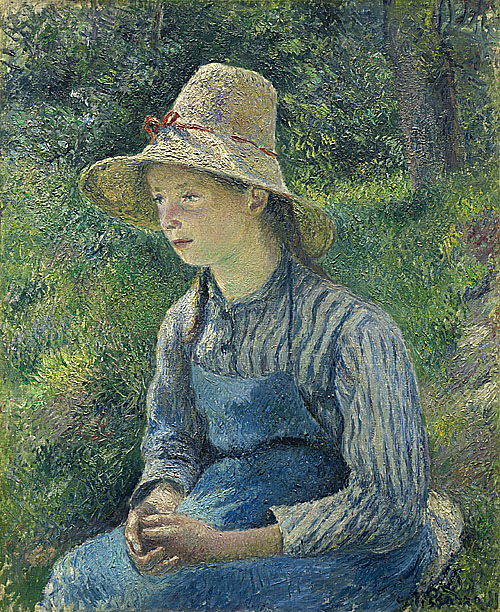
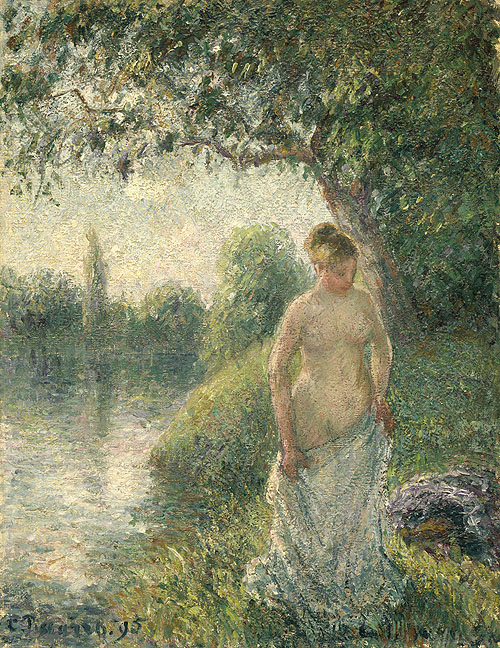
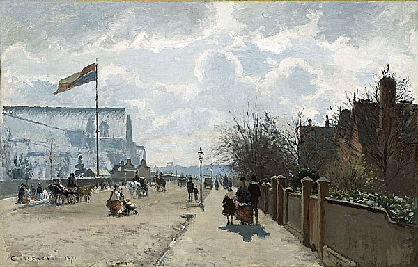

印象派藝術家介紹

卡米耶·畢沙羅（Camille Pissarro，1830年-1903年）是法國後印象派的重要藝術家之一。他在印象派藝術運動的形成和發展過程中扮演了重要角色，也是印象派的先驅之一。 畢沙羅的作品主要以風景和農村生活為主題。他對自然景觀和農村生活的描繪充滿了細膩和觀察力，並通過光線和色彩的運用來表現自然的變化和氛圍。他嘗試捕捉光線和色彩的瞬間效果，並以其對細節的關注和筆觸的自由表現而受到讚揚。 畢沙羅的作品風格獨特，他在畫面中運用了多層次的筆觸和色彩，創造出豐富的質感和深度。他也非常關注社會和政治議題，並將這些主題融入他的作品中，呈現對現實世界的關注和批判。
-

《戴草帽的農家女》 《沐浴者》 《倫敦水晶宮》